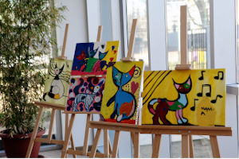
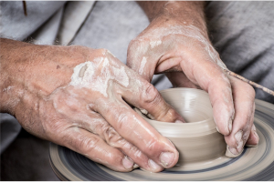
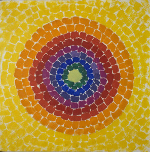
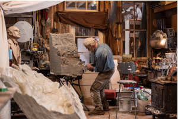

Why kids should draw? Children can't always express themselves using words and actions, so drawing is another important form of communication. You can gain an insight into your child's thoughts and feelings through their drawings. Being able to express what they feel also boosts a child's emotional intelligence. Now in its third year, the Young Artists’ Summer Show is a free, open submission exhibition for students aged 5–19. Artworks are judged by artists and arts professionals with selected artworks displayed online and on-site at the Royal Academy of Arts.Sign up
Everywhere round the world pottery workshops are considered as a particularly valuable way to spend one’s free time. They make it possible to get away from one’s everyday life, relax and test one’s creative potential. With all the people who look for ideas on how to spend their free time in an interesting way, new challenges, and who want to develop themselves in a creative way in mind, we have prepared a program of pottery workshops adjusted to your availability and expectations. With the help of the four elements: water, fire, air, and earth, you will be able to create your own, unique stoneware vessels.Price:Two-hour workshop – 165 $


This is the third talk of the six-part series Colorstruck! Painting, Pigment, Affect, presented by Richard J. Powell of Duke University for the 71st A. W. Mellon Lectures in the Modern Art Gallery. This talk takes part of its title from a painting by the acclaimed Washington, DC, artist Alma Thomas. The source for this titular and material intensity is celestial and joins the chromatic attractions and inflections that also energized countless other artists. Encapsulating this solar affect in the phrase “fire light and heat for the world,” the poet-playwright Amiri Baraka connected Thomas’s luminous palette and the noun and verb “glow” to a modern Black consciousness, and to allusions to human agency, volition, and life’s radiant possibilities. Registration is required.
The Sculpture Workshop offers the opportunity for anyone to create a unique and highly personal sculpted head. The workshops are open to anyone and are tailored to suit all abilities. Complete beginners just wanting to have a go will be amazed at just how creative they can be… and it’s great fun too!
During the 2 hour workshop you’ll follow the tutors’ guidance to create a character head in clay. Workshop sessions run most mornings from 10am to 12pm and afternoons 1pm to 3 pm.We work with all ages and abilities. So far our youngest participant has been 4 years old and our oldest 107! Everyone has the ability to create their own unique and highly personal sculptured head, which they can take home after the session. Sign up
